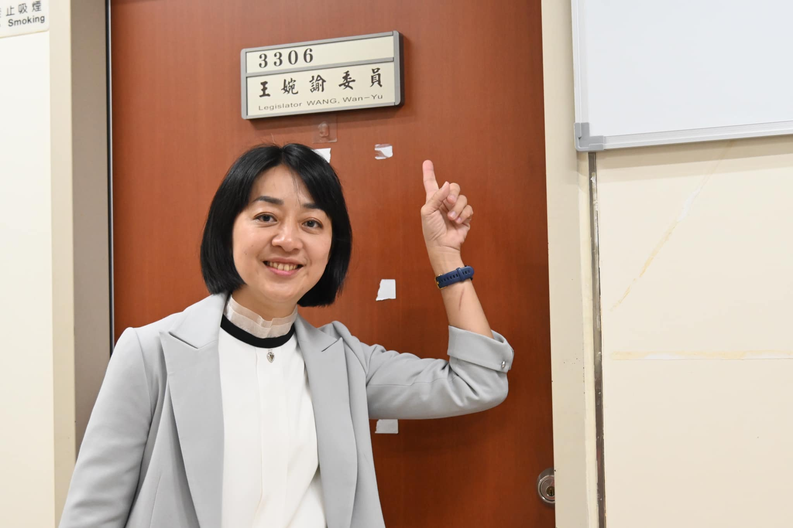

時力存在的價值：無助者的最後浮木

走過了那段最痛的路，王婉諭比誰都清楚「無助」的滋味。這也成為了她四年立委生涯中，最核心的價值導向。
在國會的四年裡，王婉諭辦公室接到的陳情案，往往帶著一種絕望的氣息。這些陳情人通常已經找遍了各大政黨的民意代表，卻因為案子太棘手、太難起訴，或者沒有新聞熱度而被拒之門外。
「時代力量，是他們最後的浮木。」
王婉諭清晰地記得一位遭到權勢性侵的被害人。當權力的高牆壓得受害者喘不過氣，所有人都勸這名受害者放棄時，只有時代力量選擇接住他。團隊陪著當事人一步步走過訴訟的泥淖，直到事後，當事人含著淚對她說：
「如果不是你們，我可能真的會走上絕路。」
這句話，像烙印一樣刻在王婉諭心裡。
「你們不在了，我們還能找誰？」

政治是殘酷的。2024 年大選，時代力量無緣續留國會。當落選已成定局，最讓王婉諭感到心痛的，不是失去立委的光環，而是一位陳情人無助的提問：
「如果你們不在立法院了，以後我們遇到這種事，還可以找誰協助？」
那一刻，她答不上來。在語塞的背後，是深深的擔憂與不捨。
從那件扣不上的西裝褲開始，王婉諭走了很遠。如今的她，目光望向 2028 年。她想帶領時代力量重回國會，只為了當下一次有人在絕望中呼救時，那裡還有一根願意承接所有重量的浮木。